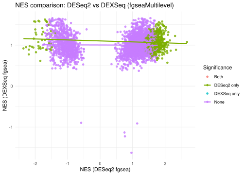

library(DEXSeq)
library(tidyverse)
library(dplyr)
library(msigdbr)
library(fgsea)DEXSeq Isoform Analysis
Load Libraries
source("99_proj_func.R")Ocular Motor Neurons
isoCm_Ocular <- read.csv("data/OcularIsoformCountMatrix.csv", row.names = 1)
Ocular_Metadata <- read.csv("data/OcularSampleMetadata.csv", row.names = 1)
IsoformInfo <- read.csv("data/isoformInfo.csv")OcularResult <- dexseq_analysis(isoCm_Ocular, Ocular_Metadata, IsoformInfo)converting counts to integer modeWarning in DESeqDataSet(rse, design, ignoreRank = TRUE): some variables in
design formula are characters, converting to factorsFit for gene/exon ENSG00000234651 threw the next warning(s): the matrix is either rank-deficient or not positive definiteCompare to Differential Expression:
alpha <- 0.05 # threshold
OcularResultGene <- OcularResult |>
as.data.frame() |>
as_tibble() |>
filter(!is.na(pvalue)) |>
select(
gene_id = groupID,
isoform_id = featureID,
stat,
log2FC = log2fold_SOD1_C9ORF72,
pvalue,
padj
) |>
group_by(gene_id) |>
slice_min(
order_by = pvalue,
n = 1,
with_ties = FALSE
) |>
ungroup() |>
mutate(
padj = p.adjust(pvalue, method = 'fdr')
) |>
filter(!is.na(padj))
head(OcularResultGene)# A tibble: 6 × 6
gene_id isoform_id stat log2FC pvalue padj
<chr> <chr> <dbl> <dbl> <dbl> <dbl>
1 ENSG00000000003 ENST00000612152 0.663 -1.38 0.718 0.802
2 ENSG00000000419 ENST00000371582 15.4 -0.441 0.000459 0.00457
3 ENSG00000000457 ENST00000423670 4.38 0.632 0.112 0.262
4 ENSG00000000460 ENST00000459772 2.89 0.462 0.236 0.410
5 ENSG00000000971 ENST00000695981 2.25 2.06 0.324 0.494
6 ENSG00000001036 ENST00000451668 5.16 -0.963 0.0757 0.205 dex_gene <- OcularResultGene |>
mutate(gene_id,
dex_padj = padj,
dex_sig = !is.na(padj) & padj < alpha)
head(dex_gene)# A tibble: 6 × 8
gene_id isoform_id stat log2FC pvalue padj dex_padj dex_sig
<chr> <chr> <dbl> <dbl> <dbl> <dbl> <dbl> <lgl>
1 ENSG00000000003 ENST00000612152 0.663 -1.38 7.18e-1 0.802 0.802 FALSE
2 ENSG00000000419 ENST00000371582 15.4 -0.441 4.59e-4 0.00457 0.00457 TRUE
3 ENSG00000000457 ENST00000423670 4.38 0.632 1.12e-1 0.262 0.262 FALSE
4 ENSG00000000460 ENST00000459772 2.89 0.462 2.36e-1 0.410 0.410 FALSE
5 ENSG00000000971 ENST00000695981 2.25 2.06 3.24e-1 0.494 0.494 FALSE
6 ENSG00000001036 ENST00000451668 5.16 -0.963 7.57e-2 0.205 0.205 FALSE load("data/Ocular_dseqResult.RData")
OcularDesq <- res_ocular
OcularDesq$padj <- as.numeric(OcularDesq$padj)OcularDesq <- OcularDesq |>
as.data.frame() |>
rownames_to_column("gene_id") |>
mutate(deseq_sig = !is.na(padj) & padj < alpha) |>
filter(!is.na(padj))
head(OcularDesq) gene_id baseMean log2FoldChange lfcSE stat pvalue
1 ENSG00000000003 12926.011840 0.10096750 0.4588043 0.22006659 0.8258193
2 ENSG00000000005 18.828508 -0.61861603 0.8402902 -0.73619336 0.4616130
3 ENSG00000000419 4025.832134 0.21512399 0.2723724 0.78981561 0.4296355
4 ENSG00000000457 1748.634605 0.20570153 0.3076286 0.66866831 0.5037071
5 ENSG00000000460 1272.541630 0.46317296 0.4467637 1.03672916 0.2998621
6 ENSG00000000938 6.719304 -0.05569774 2.1012478 -0.02650698 0.9788530
padj deseq_sig
1 0.9982948 FALSE
2 0.9982948 FALSE
3 0.9982948 FALSE
4 0.9982948 FALSE
5 0.9982948 FALSE
6 0.9982948 FALSE# Gene universe = genes present in BOTH results
univ <- intersect(dex_gene$gene_id, OcularDesq$gene_id)
both <- dex_gene |>
filter(gene_id %in% univ) |>
mutate(gene_id, dex_sig) |>
inner_join(OcularDesq |>
filter(gene_id %in% univ) |>
mutate(gene_id, deseq_sig),
by = "gene_id")
contig_tab <- table(DEXSeq = both$dex_sig, DESeq2 = both$deseq_sig)
contig_tab DESeq2
DEXSeq FALSE TRUE
FALSE 14245 22
TRUE 2851 527Fisher Test
ft <- fisher.test(contig_tab, alternative = "greater")
ft
Fisher's Exact Test for Count Data
data: contig_tab
p-value < 2.2e-16
alternative hypothesis: true odds ratio is greater than 1
95 percent confidence interval:
82.71236 Inf
sample estimates:
odds ratio
119.6497 There is very strong overlap between genes detected by DEXSeq and DESeq2.
When DEXSeq identifies a gene with differential isoform usage, that gene is much more likely than random also to show differential expression at the gene level.
Power is different across methods—DEXSeq finds many more significant genes (isoform-level testing is more sensitive), but the ones shared with DESeq2 are highly enriched.
Compare to Differential Expression at Gene-set Level
BP_df = msigdbr(species = "human", category = "C5", subcategory = "BP")
BP_list = split(BP_df$ensembl_gene, BP_df$gs_name)deseq_names <- sub("\\.\\d+$", "", OcularDesq$gene_id)
deseq_vals <- OcularDesq$stat
stats_deseq <- setNames(deseq_vals, deseq_names)
stats_deseq <- stats_deseq[!is.na(stats_deseq)]
stats_deseq <- sort(stats_deseq, decreasing = TRUE)
dex_names <- sub("\\.\\d+$", "", dex_gene$gene_id)
dex_vals <- dex_gene$stat
stats_dex <- setNames(dex_vals, dex_names)
stats_dex <- stats_dex[!is.na(stats_dex)]
stats_dex <- sort(stats_dex, decreasing = TRUE)fg_deseq <- fgseaMultilevel(pathways = BP_list, stats = stats_deseq,
minSize = 15, maxSize = 500, scoreType = "std")Warning in preparePathwaysAndStats(pathways, stats, minSize, maxSize, gseaParam, : There are ties in the preranked stats (2.4% of the list).
The order of those tied genes will be arbitrary, which may produce unexpected results.dim(fg_deseq)[1] 4244 8fg_dex <- fgseaMultilevel(pathways = BP_list, stats = stats_dex,
minSize = 15, maxSize = 500, scoreType = "std")Warning in preparePathwaysAndStats(pathways, stats, minSize, maxSize, gseaParam, : There are ties in the preranked stats (1.92% of the list).
The order of those tied genes will be arbitrary, which may produce unexpected results.Warning in preparePathwaysAndStats(pathways, stats, minSize, maxSize,
gseaParam, : All values in the stats vector are greater than zero and scoreType
is "std", maybe you should switch to scoreType = "pos".Warning in fgseaMultilevel(pathways = BP_list, stats = stats_dex, minSize = 15,
: There were 15 pathways for which P-values were not calculated properly due to
unbalanced (positive and negative) gene-level statistic values. For such
pathways pval, padj, NES, log2err are set to NA. You can try to increase the
value of the argument nPermSimple (for example set it nPermSimple = 10000)Warning in fgseaMultilevel(pathways = BP_list, stats = stats_dex, minSize = 15,
: For some of the pathways the P-values were likely overestimated. For such
pathways log2err is set to NA.dim(fg_dex)[1] 3734 8sig_deseq <- fg_deseq |> filter(padj < alpha) |> arrange(padj)
sig_dex <- fg_dex |> filter(padj < alpha) |> arrange(padj)
n_sig_de <- nrow(sig_deseq)
n_sig_dx <- nrow(sig_dex)
# shared pathways (by name)
shared <- intersect(sig_deseq$pathway, sig_dex$pathway)
n_shared <- length(shared)
n_sig_de[1] 1044n_sig_dx[1] 5n_shared[1] 2shared[1] "GOBP_REGULATION_OF_ACTIVIN_RECEPTOR_SIGNALING_PATHWAY"
[2] "GOBP_ACTIVIN_RECEPTOR_SIGNALING_PATHWAY" de_df <- fg_deseq |> transmute(pathway, NES_de = NES, padj_de = padj)
dx_df <- fg_dex |> transmute(pathway, NES_dx = NES, padj_dx = padj)
# Merge on pathway (shared sets only)
cmp <- inner_join(de_df, dx_df, by = "pathway") %>%
mutate(sig_cat = case_when(
padj_de < alpha & padj_dx < alpha ~ "Both",
padj_de < alpha & padj_dx >= alpha ~ "DESeq2 only",
padj_de >= alpha & padj_dx < alpha ~ "DEXSeq only",
TRUE ~ "None"
)) %>%
mutate(sig_cat = factor(sig_cat, levels = c("Both","DESeq2 only","DEXSeq only","None")))
cmp pathway NES_de
<char> <num>
1: GOBP_2_OXOGLUTARATE_METABOLIC_PROCESS 1.6253392
2: GOBP_3_PHOSPHOADENOSINE_5_PHOSPHOSULFATE_METABOLIC_PROCESS -1.2978383
3: GOBP_3_UTR_MEDIATED_MRNA_STABILIZATION 1.2793467
4: GOBP_ACETYL_COA_BIOSYNTHETIC_PROCESS 1.6751471
5: GOBP_ACETYL_COA_METABOLIC_PROCESS 1.7328568
---
3655: GOBP_XENOBIOTIC_METABOLIC_PROCESS 1.2553893
3656: GOBP_XENOBIOTIC_TRANSPORT 0.6565336
3657: GOBP_ZINC_ION_HOMEOSTASIS -1.3256234
3658: GOBP_ZINC_ION_TRANSPORT -1.3429138
3659: GOBP_ZYMOGEN_ACTIVATION 0.8346906
padj_de NES_dx padj_dx sig_cat
<num> <num> <num> <fctr>
1: 0.07921103 0.9715327 1.0000000 None
2: 0.29809352 1.0783381 1.0000000 None
3: 0.34778920 0.9737483 1.0000000 None
4: 0.05976898 1.1832728 1.0000000 None
5: 0.04381907 1.0393303 1.0000000 DESeq2 only
---
3655: 0.21381320 0.9599041 1.0000000 None
3656: 0.94561491 1.1826670 1.0000000 None
3657: 0.24082495 1.5091009 0.6538901 None
3658: 0.21982674 1.5601238 0.4029804 None
3659: 0.80135834 1.0291228 1.0000000 None# Scatter + smooth
ggplot(cmp, aes(x = NES_de, y = NES_dx, color = sig_cat)) +
geom_point(alpha = 0.8) +
geom_smooth(method = "lm", se = FALSE) +
labs(
x = "NES (DESeq2 fgsea)",
y = "NES (DEXSeq fgsea)",
color = "Significance",
title = "NES comparison: DESeq2 vs DEXSeq (fgseaMultilevel)"
) +
theme_minimal()`geom_smooth()` using formula = 'y ~ x'Warning: Removed 15 rows containing non-finite outside the scale range
(`stat_smooth()`).Warning: Removed 15 rows containing missing values or values outside the scale range
(`geom_point()`).
save(OcularResult, file="data/Ocular_dxdResult.RData")Spinal Motor Neurons
Load Data
isoCm_Spinal <- read.csv("data/SpinalIsoformCountMatrix.csv", row.names = 1)
Spinal_Metadata <- read.csv("data/SpinalSampleMetadata.csv", row.names = 1)
IsoformInfo <- read.csv("data/isoformInfo.csv")SpinalResult <- dexseq_analysis(isoCm_Spinal, Spinal_Metadata, IsoformInfo)converting counts to integer modeWarning in DESeqDataSet(rse, design, ignoreRank = TRUE): some variables in
design formula are characters, converting to factorsCompare to Differential Expression:
alpha <- 0.05 # example threshold
SpinalResultGene <- SpinalResult |>
as.data.frame() |>
as_tibble() |>
filter(!is.na(pvalue)) |>
select(
gene_id = groupID,
isoform_id = featureID,
stat,
log2FC = log2fold_SOD1_C9ORF72,
pvalue,
padj
) |>
group_by(gene_id) |>
slice_min(
order_by = pvalue,
n = 1,
with_ties = FALSE
) |>
ungroup() |>
mutate(
padj = p.adjust(pvalue, method = 'fdr')
) |>
filter(!is.na(padj))dex_gene <- SpinalResultGene |>
mutate(gene_id,
dex_padj = padj,
dex_sig = !is.na(padj) & padj < alpha)load("data/Spinal_dseqResult.RData")
SpinalDesq <- res_spinal
SpinalDesq$padj <- as.numeric(SpinalDesq$padj)SpinalDesq <- SpinalDesq |>
as.data.frame() |>
rownames_to_column("gene_id") |>
mutate(deseq_sig = !is.na(padj) & padj < alpha) |>
filter(!is.na(padj))# Gene universe = genes present in BOTH results
univ <- intersect(dex_gene$gene_id, SpinalDesq$gene_id)
both <- dex_gene %>%
filter(gene_id %in% univ) %>%
mutate(gene_id, dex_sig) %>%
inner_join(SpinalDesq %>%
filter(gene_id %in% univ) %>%
mutate(gene_id, deseq_sig), by = "gene_id")
contig_tab <- table(DEXSeq = both$dex_sig, DESeq2 = both$deseq_sig)
contig_tab DESeq2
DEXSeq FALSE TRUE
FALSE 9610 151
TRUE 5716 2569Fisher Test
ft <- fisher.test(contig_tab, alternative = "greater")
ft
Fisher's Exact Test for Count Data
data: contig_tab
p-value < 2.2e-16
alternative hypothesis: true odds ratio is greater than 1
95 percent confidence interval:
24.81046 Inf
sample estimates:
odds ratio
28.59946 Compare to Differential Expression at Gene-set Level
BP_df = msigdbr(species = "human", category = "C5", subcategory = "BP")
BP_list = split(BP_df$ensembl_gene, BP_df$gs_name)deseq_names <- sub("\\.\\d+$", "", SpinalDesq$gene_id)
deseq_vals <- SpinalDesq$stat
stats_deseq <- setNames(deseq_vals, deseq_names)
stats_deseq <- stats_deseq[!is.na(stats_deseq)]
stats_deseq <- sort(stats_deseq, decreasing = TRUE)
dex_names <- sub("\\.\\d+$", "", dex_gene$gene_id)
dex_vals <- dex_gene$stat
stats_dex <- setNames(dex_vals, dex_names)
stats_dex <- stats_dex[!is.na(stats_dex)]
stats_dex <- sort(stats_dex, decreasing = TRUE)fg_deseq <- fgseaMultilevel(pathways = BP_list, stats = stats_deseq,
minSize = 15, maxSize = 500, scoreType = "std")Warning in preparePathwaysAndStats(pathways, stats, minSize, maxSize, gseaParam, : There are ties in the preranked stats (2.9% of the list).
The order of those tied genes will be arbitrary, which may produce unexpected results.fg_dex <- fgseaMultilevel(pathways = BP_list, stats = stats_dex,
minSize = 15, maxSize = 500, scoreType = "std")Warning in preparePathwaysAndStats(pathways, stats, minSize, maxSize, gseaParam, : There are ties in the preranked stats (2.02% of the list).
The order of those tied genes will be arbitrary, which may produce unexpected results.Warning in preparePathwaysAndStats(pathways, stats, minSize, maxSize,
gseaParam, : All values in the stats vector are greater than zero and scoreType
is "std", maybe you should switch to scoreType = "pos".Warning in fgseaMultilevel(pathways = BP_list, stats = stats_dex, minSize = 15,
: There were 3 pathways for which P-values were not calculated properly due to
unbalanced (positive and negative) gene-level statistic values. For such
pathways pval, padj, NES, log2err are set to NA. You can try to increase the
value of the argument nPermSimple (for example set it nPermSimple = 10000)sig_deseq <- fg_deseq %>% filter(padj < alpha) %>% arrange(padj)
sig_dex <- fg_dex %>% filter(padj < alpha) %>% arrange(padj)
n_sig_de <- nrow(sig_deseq)
n_sig_dx <- nrow(sig_dex)
# shared pathways (by name)
shared <- intersect(sig_deseq$pathway, sig_dex$pathway)
n_shared <- length(shared)
n_sig_de[1] 608n_sig_dx[1] 2n_shared[1] 1shared[1] "GOBP_ANTIGEN_PROCESSING_AND_PRESENTATION"de_df <- fg_deseq %>% transmute(pathway, NES_de = NES, padj_de = padj)
dx_df <- fg_dex %>% transmute(pathway, NES_dx = NES, padj_dx = padj)
# Merge on pathway (shared sets only)
cmp <- inner_join(de_df, dx_df, by = "pathway") %>%
mutate(sig_cat = case_when(
padj_de < alpha & padj_dx < alpha ~ "Both",
padj_de < alpha & padj_dx >= alpha ~ "DESeq2 only",
padj_de >= alpha & padj_dx < alpha ~ "DEXSeq only",
TRUE ~ "None"
)) %>%
mutate(sig_cat = factor(sig_cat, levels = c("Both","DESeq2 only","DEXSeq only","None")))# Scatter + smooth
ggplot(cmp, aes(x = NES_de, y = NES_dx, color = sig_cat)) +
geom_point(alpha = 0.8) +
geom_smooth(method = "lm", se = FALSE) +
labs(
x = "NES (DESeq2 fgsea)",
y = "NES (DEXSeq fgsea)",
color = "Significance",
title = "NES comparison: DESeq2 vs DEXSeq (fgseaMultilevel)"
) +
theme_minimal()`geom_smooth()` using formula = 'y ~ x'Warning: Removed 3 rows containing non-finite outside the scale range
(`stat_smooth()`).Warning: Removed 3 rows containing missing values or values outside the scale range
(`geom_point()`).
save(SpinalResult, file="data/Spinal_dxdResult.RData")iso_id_padj_value_ocular = data.frame("transcript_id" = OcularResult$featureID,
"padj" = OcularResult$padj)
iso_id_padj_value_spinal = data.frame("transcript_id" = SpinalResult$featureID,
"padj" = SpinalResult$padj)
write.csv(iso_id_padj_value_ocular, "data/iso_id_padj_value_ocular.csv")
write.csv(iso_id_padj_value_spinal, "data/iso_id_padj_value_spinal.csv")